Ejemplo 1
En el siguiente ejemplo podremos observar cómo se lleva a cabo el método de Quine McCluskey para minimizar la siguiente expresión.
f=(a,b,c,d) = (1,3,9,11) podemos observar que la función contiene 4 minitérminos
Nuestro paso no.1 es generar nuestra Tabla 1:

Columna minitérminos: llenamos conforme a los minitérminos que nos muestra la función en este caso: 1,3,9,11
Columna 1´s: es el número de 1´s que contiene el número binario de ese minitérmino
abcd: el número binario que representa ese minitérmino
Nuestro paso no.2 es generar nuestra Tabla 2 que consiste en lo siguiente:

En nuestra tabla 2 agruparemos nuestros minitérminos conforme al número de 1´s que contengan en su número binario.
En la columna de comentarios de la tabla 1 iremos añadiendo un * a cada minitérmino ya utilizado en nuestra tabla 2 esto con la finalidad de tener un mejor control.
Nuestro paso no.3 es generar nuestra Tabla 3 de la siguiente manera:

En nuestra tabla 3 haremos combinaciones con los minitérminos que tenemos en la tabla 2, es muy importante saber que solo pueden cambiar en una sola variable y que se debe de hacer de acuerdo con el número de 1´s; primero los un 1´s con los de dos 1´s, los de dos 1´s con los de tres 1´s y sucesivamente.
Después intercambiaremos por un guion la variable que cambia en nuestra combinación y nuevamente llenamos la columna de 1´s que hay en esa combinación.
Nota: importante marcar con * cada minitérmino utilizado en nuestra tabla 2
El siguiente paso no.4 es realizar nuestra Tabla 4 con las siguientes especificaciones:

En este caso tenemos la combinación: (1,3,9,11) porque son combinaciones que ya existen (1,3) con (9,11) y también tenemos (1,9) con (3,11) entonces no las repetimos, y recordamos seguir la misma técnica que en la tabla 3 combinamos los un 1´s con los 2 1´s y así sucesivamente. Importante agregar un guion en la variable que cambie en nuestra combinación.
Nota: marcar con un * en nuestra tabla 3 los minitérminos que utilizamos en nuestras combinaciones
Nuestro paso no.5 y último paso es generar nuestra Tabla 5 de la siguiente manera:

COLUMNAS TABLA 5
abcd: Este es el número binario de nuestra combinación después de modificar la variable distinta con un guion.
1´s: El número de 1´s que contiene nuestro número binario dado por la combinación.
1,3,9,11: son todos los minitérminos de nuestra expresión, tiene una x para marcar que ya han sido utilizados.
Producto: Es el valor de las variables según nuestra columna abcd en la Tabla 5, recordemos que un guion nos indica que no es necesaria esa variable, un cero es el negado de la variable y un 1 es la misma variable.
En nuestro resultado final pondremos nuestra minimización dada por la suma de productos de la siguiente manera:
f=(a,b,c,d) = ∑m(1,3,9,11) = b´d
Ejemplo 2
En el siguiente ejemplo podremos observar cómo se lleva a cabo el método de Quine McCluskey para minimizar la siguiente expresión.
f=(a,b,c,d) = ∑m(0,1,4,5,11,15) podemos observar que la función contiene 6 minitérminos
Nuestro paso no.1 es generar nuestra Tabla 1:
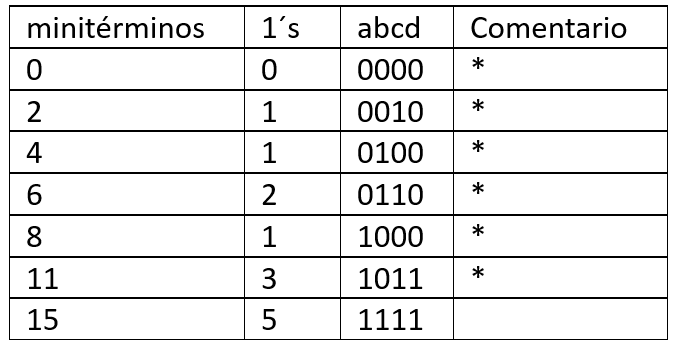Columna minitérminos: llenamos conforme a los minitérminos que nos muestra la función en este caso: 0,1,4,5,11,15
Columna 1´s: es el número de 1´s que contiene el número binario de ese minitérmino
abcd: el número binario que representa ese minitérmino
Nuestro paso no.2 es generar nuestra Tabla 2 que consiste en lo siguiente:
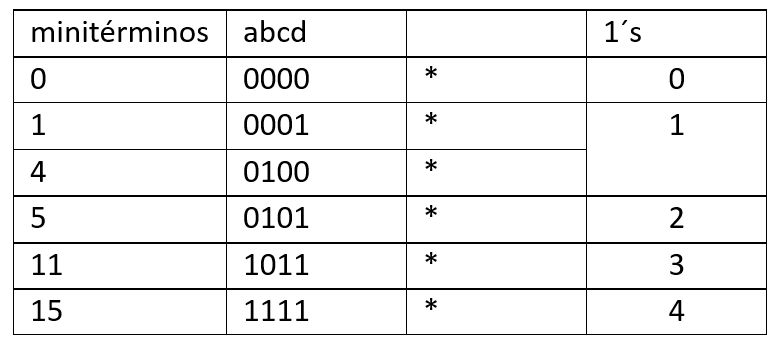En nuestra tabla 2 agruparemos nuestros minitérminos conforme al número de 1´s que contengan en su número binario.5
Nota: En la columna de comentarios de la tabla 1 iremos añadiendo un * a cada minitérmino ya utilizado en nuestra tabla 2 esto con la finalidad de tener un mejor control.
Nuestro paso no.3 es generar nuestra Tabla 3 de la siguiente manera:
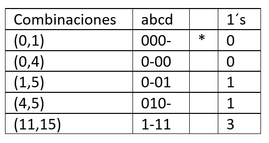En nuestra tabla 3 haremos combinaciones con los minitérminos que tenemos en la tabla 2, es muy importante saber que solo pueden cambiar en una sola variable y que se debe de hacer de acuerdo con el número de 1´s; primero los un 1´s con los de dos 1´s, los de dos 1´s con los de tres 1´s y sucesivamente.
Después intercambiaremos por un guion la variable que cambia en nuestra combinación y nuevamente llenamos la columna de 1´s que hay en esa combinación.
Nota: Importante marcar con * cada minitérmino utilizado en nuestra tabla 2
El siguiente paso no.4 es realizar nuestra Tabla 4 con las siguientes especificaciones:
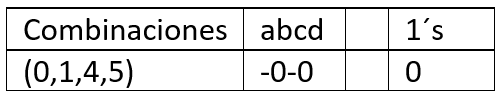En este caso tenemos la combinación: (0,1,4,5) porque son combinaciones que ya existen (0,1) con (4,5) y también tenemos (0,4) con (1,5) entonces no las repetimos, y recordamos seguir la misma técnica que en la tabla 3 combinamos los un 1´s con los 2 1´s y así sucesivamente. Importante agregar un guion en la variable que cambie en nuestra combinación.
Nota: Marcar con un * en nuestra tabla 3 los minitérminos que utilizamos en nuestras combinaciones
Nuestro paso no.5 y último paso es generar nuestra Tabla 5 de la siguiente manera:
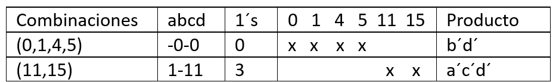COLUMNAS TABLA 5
Combinaciones: Esta columna contiene las combinaciones que realizamos en nuestra tabla 4 y también las que no contengan asteriscos.
abcd: Este es el número binario de nuestra combinación después de modificar la variable distinta con un guion.
1´s: El número de 1´s que contiene nuestro número binario dado por la combinación.
0,1,4,5,11,15: son todos los minitérminos de nuestra expresión, tiene una x para marcar que ya han sido utilizados.
Producto: Es el valor de las variables según nuestra columna abcd en la Tabla 5, recordemos que un guion nos indica que no es necesaria esa variable, un cero es el negado de la variable y un 1 es la misma variable.
En nuestro resultado final pondremos nuestra minimización dada por la suma de productos de la siguiente manera: f=(a,b,c,d) = ∑m(0,1,4,5,11,15) = b´d´+ a´c´d´
Ejemplo 3
En el siguiente ejemplo podremos observar cómo se lleva a cabo el método de Quine McCluskey para minimizar la siguiente expresión.
f=(a,b,c,d) = ∑m(0,2,4,6,8,11,15) podemos observar que la función contiene 7 minitérminos
Nuestro paso no.1 es generar nuestra Tabla 1:
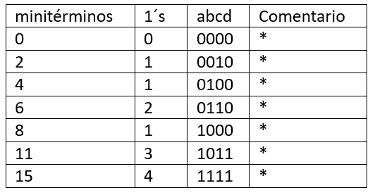Columna minitérminos: llenamos conforme a los minitérminos que nos muestra la función en este caso: 0,2,4,6,8,11,15
Columna 1´s: es el número de 1´s que contiene el número binario de ese minitérmino
abcd: el número binario que representa ese minitérmino
Nuestro paso no.2 es generar nuestra Tabla 2 que consiste en lo siguiente:
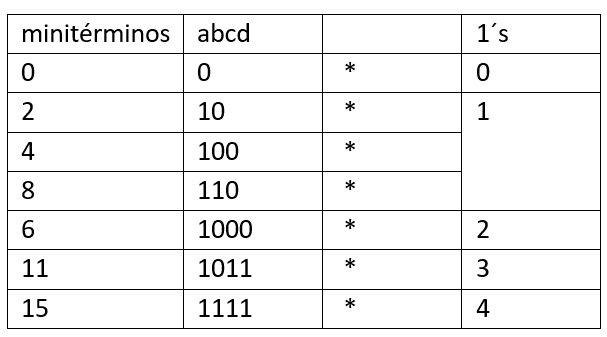En nuestra tabla 2 agruparemos nuestros minitérminos conforme al número de 1´s que contengan en su número binario.
Nota: En la columna de comentarios de la tabla 1 iremos añadiendo un * a cada minitérmino ya utilizado en nuestra tabla 2 esto con la finalidad de tener un mejor control.
Nuestro paso no.3 es generar nuestra Tabla 3 de la siguiente manera:
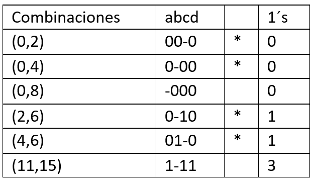En nuestra tabla 3 haremos combinaciones con los minitérminos que tenemos en la tabla 2, es muy importante saber que solo pueden cambiar en una sola variable y que se debe de hacer de acuerdo con el número de 1´s; primero los un 1´s con los de dos 1´s, los de dos 1´s con los de tres 1´s y sucesivamente.
Después intercambiaremos por un guion la variable que cambia en nuestra combinación y nuevamente llenamos la columna de 1´s que hay en esa combinación.
Nota: importante marcar con * cada minitérmino utilizado en nuestra tabla 2
El siguiente paso no.4 es realizar nuestra Tabla 4 con las siguientes especificaciones:
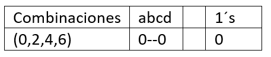En este caso tenemos la combinación: (0,2,4,6) porque son combinaciones que ya existen (0,4) con (2,6) y también tenemos (0,2) con (4,6) entonces no las repetimos, y recordamos seguir la misma técnica que en la tabla 3 combinamos los un 1´s con los 2 1´s y así sucesivamente. Importante agregar un guion en la variable que cambie en nuestra combinación.
Nota: marcar con un * en nuestra tabla 3 los minitérminos que utilizamos en nuestras combinaciones
Nuestro paso no.5 y último paso es generar nuestra Tabla 5 de la siguiente manera:
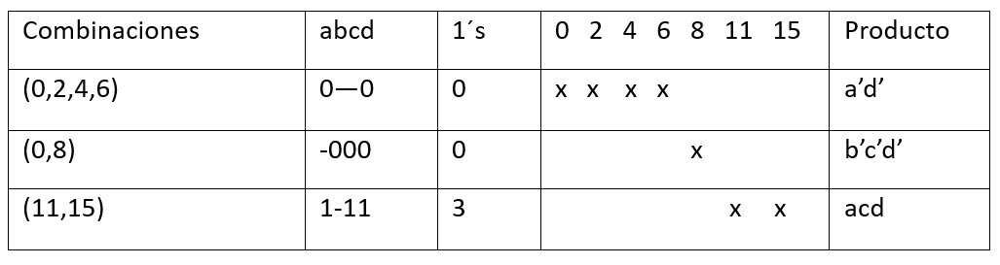COLUMNAS TABLA 5
Combinaciones: Esta columna contiene las combinaciones que realizamos nuestra tabla 4 y también las combinaciones que se quedan sin asterisco.
abcd: Este es el número binario de nuestra combinación después de modificar la variable distinta con un guion.
1´s: El número de 1´s que contiene nuestro número binario dado por la combinación.
(0,2,4,6,8,11,15): son todos los minitérminos de nuestra expresión, tiene una x para marcar que ya han sido utilizados.
Producto: Es el valor de las variables según nuestra columna abcd en la Tabla 5, recordemos que un guion nos indica que no es necesaria esa variable, un cero es el negado de la variable y un 1 es la misma variable.
En nuestro resultado final pondremos nuestra minimización dada por la suma de productos de la siguiente manera: f=(a,b,c,d) = ∑m(0,2,4,6,8,11,15) = a’d’+b’c’d’+ acd
Ejemplo 4
En el siguiente ejemplo podremos observar cómo se lleva a cabo el método de Quine McCluskey para minimizar la siguiente expresión.
f=(a,b,c,d) = ∑m(1,2,5,8,9,10,13) podemos observar que la función contiene 7 minitérminos
Nuestro paso no.1 es generar nuestra Tabla 1:
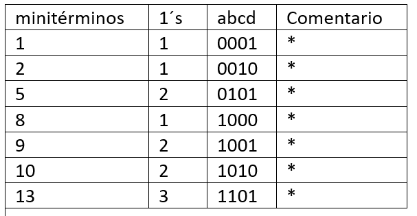Columna minitérminos: llenamos conforme a los minitérminos que nos muestra la función en este caso: 1,2,5,8,9,10,13
Columna 1´s: es el número de 1´s que contiene el número binario de ese minitérmino
abcd: el número binario que representa ese minitérmino
Nuestro paso no.2 es generar nuestra Tabla 2 que consiste en lo siguiente:
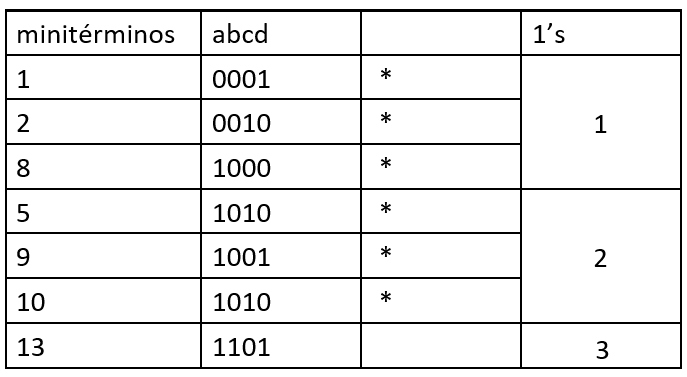En nuestra tabla 2 agruparemos nuestros minitérminos conforme al número de 1´s que contengan en su número binario.
Nota: En la columna de comentarios de la tabla 1 iremos añadiendo un * a cada minitérmino ya utilizado en nuestra tabla 2 esto con la finalidad de tener un mejor control.
Nuestro paso no.3 es generar nuestra Tabla 3 de la siguiente manera:
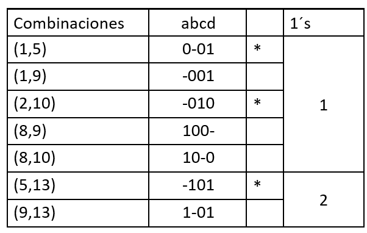En nuestra tabla 3 haremos combinaciones con los minitérminos que tenemos en la tabla 2, es muy importante saber que solo pueden cambiar en una sola variable y que se debe de hacer de acuerdo con el número de 1´s; primero los un 1´s con los de dos 1´s, los de dos 1´s con los de tres 1´s y sucesivamente.
Después intercambiaremos por un guion la variable que cambia en nuestra combinación y nuevamente llenamos la columna de 1´s que hay en esa combinación.
Nota: importante marcar con * cada minitérmino utilizado en nuestra tabla 2
El siguiente paso no.4 es realizar nuestra Tabla 4 con las siguientes especificaciones:
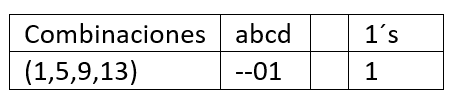En este caso tenemos la combinación: (1,5,9,13) porque son combinaciones que ya existen (1,5) con (9,13). Recordamos seguir la misma técnica que en la tabla 3 combinamos los un 1´s con los 2 1´s y así sucesivamente. Importante agregar un guion en la variable que cambie en nuestra combinación.
Nota: marcar con un * en nuestra tabla 3 los minitérminos que utilizamos en nuestras combinaciones
Nuestro paso no.5 y último paso es generar nuestra Tabla 5 de la siguiente manera:
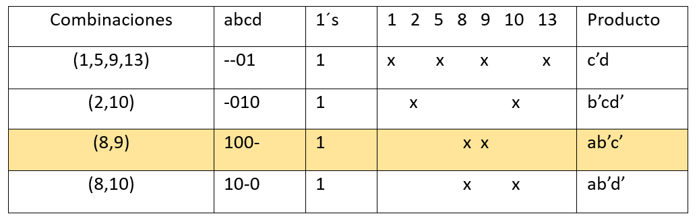COLUMNAS TABLA 5
Combinaciones: Esta columna contiene las combinaciones que realizamos nuestra tabla 4 y también las combinaciones que se quedan sin asterisco.
abcd: Este es el número binario de nuestra combinación después de modificar la variable distinta con un guion.
1´s: El número de 1´s que contiene nuestro número binario dado por la combinación.
(1,2,5,8,9,10,13): son todos los minitérminos de nuestra expresión, tiene una x para marcar que ya han sido utilizados.
Producto: Es el valor de las variables según nuestra columna abcd en la Tabla 5, recordemos que un guion nos indica que no es necesaria esa variable, un cero es el negado de la variable y un 1 es la misma variable
Nota: Si logramos observar nuestra combinación (8,9) ya está contenida en otras combinaciones, por lo tanto, la eliminamos
En nuestro resultado final pondremos nuestra minimización dada por la suma de productos de la siguiente manera recordando eliminar nuestra combinación (8,9)
f=(a,b,c,d) = ∑m(0,2,4,6,8,11,15) = c’d+ b’cd’+ ab’d’
Ejemplo 5
En el siguiente ejemplo podremos observar cómo se lleva a cabo el método de Quine McCluskey para minimizar la siguiente expresión.
f(a,b,c,d)= ∑m(0,2,4,5,6,8)
Nuestro paso no.1 es generar nuestra Tabla 1 y obtener las formas binarias de los minitérminos y la cantidad de 1’s en ellos:
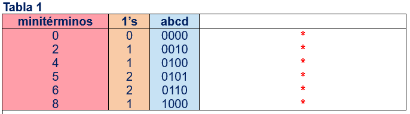Generamos la segunda tabla. Objetivo: Reagrupar a los minitérminos con base en la cantidad de 1’s en su representación binaria.
Marcamos con un * en la Tabla 1, para indicar que hemos agregado los minitérminos en la Tabla 2.
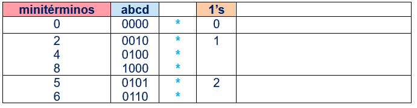Generamos una tercera tabla. Objetivo: Realizar la primera combinación con minitérminos.
**Pasamos a la parte de realización de combinaciones con los minitérminos.
COMBINACIONES:
1.Buscamos en la representación binaria de los minitérminos, los que difieren en solo una variable (la que sea) para poder realizar una combinación con apoyo en la tabla 2.
2.Empezamos con el primer caso en la cantidad de 1’s con la siguiente cantidad. En este caso los que tienen cero 1’s con los que tiene un solo 1.
3.Al combinar a los minitérminos, si tenemos:
0 y 0 = 0
1 y 1 = 1
0 y 1 = -
Ej.: Buscamos combinar al minitérmino 0 y 2.

Marcamos con un * en la Tabla 2, para indicar que hemos agregado las combinaciones de minitérminos posibles en la Tabla 3.
Tabla 3
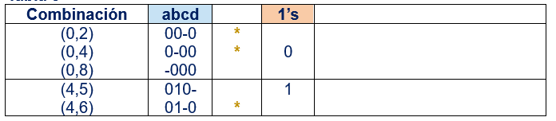4.Generamos una cuarta tabla. Objetivo: Realizar la segunda combinación con las combinaciones de la tabla anterior.
Buscamos combinar a la combinación (0,2) y (4,6).
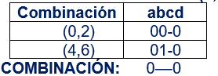Marcamos con un * para las combinaciones (0,2) y (4,6) primero por la combinación que estamos realizando. Sin embargo, como tenemos representado también a (0,4), lo marcaremos de igual manera en la Tabla 3.
Tabla 4
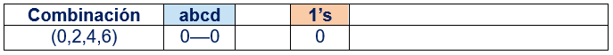5.Generamos la tabla 5. Objetivo: Colocar a los implicantes primos (combinaciones que ya no pueden ser combinadas con otras; se denotan por no tener una marca * en las tablas 3 y 4), en una sola tabla para obtener a los productos.
Tabla 5. Implicantes primos

NOTA: Si en la representación binaria (abcd) tenemos para el producto:
- no hay variable representativa
0 la variable está negada
1 la variable no está negada
FINALMENTE OBTENEMOS LA MINIMIZACIÓN DADA POR LA SUMA DE LOS PRODUCTOS, resultado que podemos representar como:
f(a,b,c,d)= ∑m(0,2,4,5,6,8)=a' d'+b' c' d'+a'bc'
o simplemente:
f(a,b,c,d)=a'd'+b'c'd'+a'bc'
Ejemplo 6
f(a,b,c,d) = ∑m(0,2,3,7,9)
Creamos nuestra tabla 1:
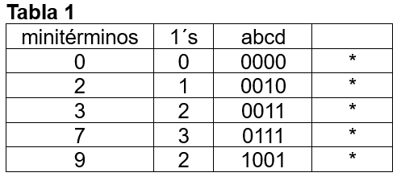Creamos nuestra tabla 2:
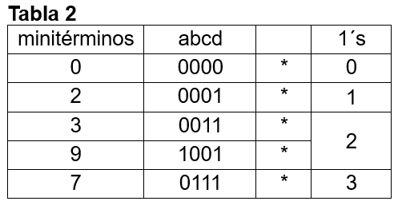Creamos nuestra tabla 3:
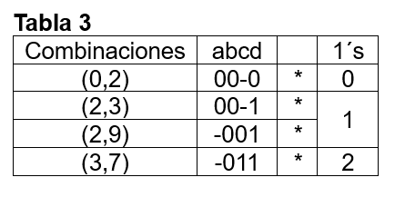Creamos nuestra tabla 4:
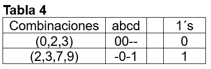Creamos nuestra tabla 5:
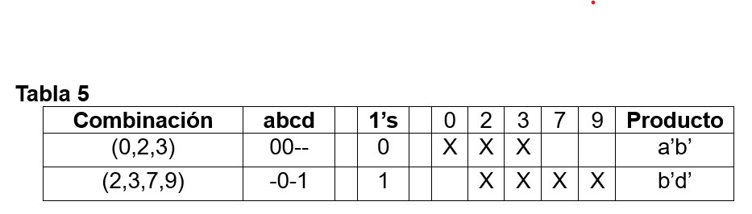En nuestro resultado final pondremos nuestra minimización dada por la suma de productos de la siguiente manera:
f(a,b,c,d) = ∑m=(0,2,3,7,9) = a’b’+b’d’
Ejemplo 7
f(a,b,c,d) = ∑m(4,5,7,13)
Creamos nuestra tabla 1:
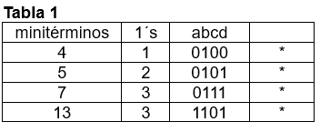Creamos nuestra tabla 2:

Creamos nuestra tabla 3:
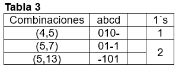Creamos nuestra tabla 4:
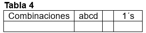Directo a la tabla 5, pues todas las combinaciones anteriores son implicantes primos.
Creamos nuestra tabla 5:
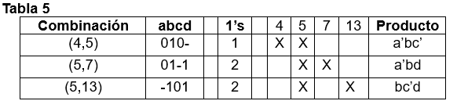En nuestro resultado final pondremos nuestra minimización dada por la suma de productos de la siguiente manera:
f(a,b,c,d) = ∑m(0,2,3,7,9)= a’bc’+a’bd+bc’d